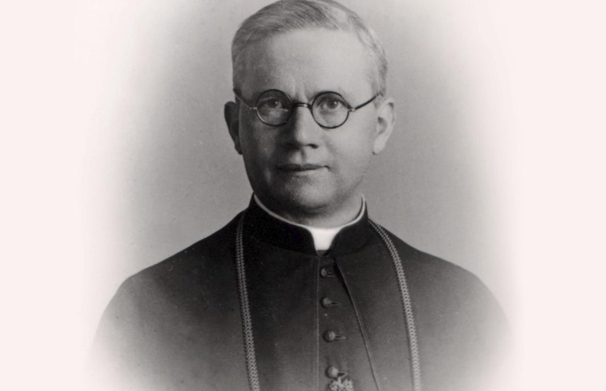

Isusovački blaženici
Svećenik
Bl. Eduard Profittlich
1890. – 1942.
Eduard Profittlich — svećenik. Nadbiskup; apostolski administrator Estonije Umro od posljedica mučenja i zatvorskih uvjeta prije izvršenja smrtne presude.
Tekst je sažet i prilagođen uz pomoć umjetne inteligencije.

Izvor slike

Izvor slike
- Spomendan
- 22. veljače
- Zaštitništvo
- Nije navedeno u izvoru
- Životni vijek
- 1890. – 1942.
- Djelovanje
- Progoni i progonstvo · Mučeništvo
- Razdoblje
- 19., 20. stoljeće
- Datum rođenja
- 11.09.1890.
- Mjesto rođenja
- Birresdorf, Njemačka
- Datum smrti
- 22.02.1942.
- Mjesto smrti/mučeništva
- Zatvor u Kirovu, Rusija
- Okolnosti smrti/mučeništva
- Umro od posljedica mučenja i zatvorskih uvjeta prije izvršenja smrtne presude.
- Uloga
- Svećenik
- Mučenik
- Da
- Ostale oznake
- Nadbiskup; apostolski administrator Estonije
- Pripadnost
- Isusovac
- Drugi oblici imena
- Eduard
Životopis
Eduard Profittlich — svećenik. Nadbiskup; apostolski administrator Estonije Umro od posljedica mučenja i zatvorskih uvjeta prije izvršenja smrtne presude.
Mjesto rođenja: Birresdorf, Njemačka. Potvrđen puni datum: 11.09.1890.
Mjesto smrti ili mučeništva: Zatvor u Kirovu, Rusija. Umro od posljedica mučenja i zatvorskih uvjeta prije izvršenja smrtne presude.
Nadbiskup; apostolski administrator Estonije
Tekst je sažet i prilagođen uz pomoć umjetne inteligencije.
Pročitaj više na izvornoj stranici ↗